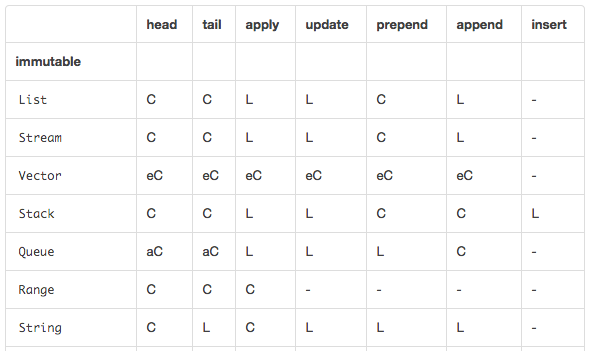

<!DOCTYPE html>
<html lang="pl"></html>
<head>
  <title>Michał Kowol</title>
  <meta charset="utf-8">
  <meta name="viewport" content="width=device-width, initial-scale=1">
  <link rel="stylesheet" href="css/vendor.min.css"/>
  <link rel="stylesheet" href="css/style.min.css"/>
</head>
<body>
  <div class="container">
    <div class="posts">
      <h1>Scala (notes)</h1>
      <div class="panel panel-default">
        <div class="panel-heading"></div>
        <div class="panel-body">
          <h4>Functions without parameters</h4>
          <div>
            <script src="https://gist.github.com/michalkowol/8c9682823103c6813097.js"></script>
            <div>The first one is better, bacause you can easly replace it with <code>val</code>.</div>
          </div>
          <h4>Default parameters</h4>
          <script src="https://gist.github.com/michalkowol/ec5c78769d9aab576d84.js"></script>
          <h4>Public API</h4>
          <div>If we define public API, all methods and parameters should have explicite type.</div>
          <h4>Operators</h4>
          <div>
            <script src="https://gist.github.com/michalkowol/ccfc2bdb0bb0a90dec56.js"></script>
            <div>To be consisten:</div>
            <ul>
              <li>all operators like <code>+, !, -</code>, etc should be used with infix notation</li>
              <li>in other cases we <b>shoudl</b> use dot notation.</li>
            </ul>
          </div>
          <h4>Named parameters</h4>
          <div>
            <script src="https://gist.github.com/michalkowol/fe5d0b8fa16a6857a2eb.js"></script>
            <div>When we have a lot of parameters (especially with the same type - integers and strings), we should used named parameters (classes, methods). It makes code more readable and more expressibler.</div>
          </div>
          <h4>Imports in block is ok</h4>
          <div>If you need import only in one function import it in function body.</div>
          <h4>Private access modifiers in Scala</h4>
          <div>
            <script src="https://gist.github.com/michalkowol/fe5d0b8fa16a6857a2eb.js"></script><code>private [this]</code> is very restrict. You can use package access modifier (it could be good for tests).
          </div>
          <h4>Extending <code>App</code> or <code>main(args: Array[String])</code></h4>
          <div>Extending <code>App</code> is code for prototyping. In production you should use <code>main</code>. Why?
            <ul>
              <li>Whole object body is treatead as main</li>
              <li>You don't hava access to <code>args</code></li>
              <li>
                <blockquote cite="http://www.scala-lang.org/api/current/index.html#scala.App" class="small">It should be noted that this trait is implemented using the DelayedInit functionality, which means that fields of the object will not have been initialized before the main method has been executed.</blockquote>
              </li>
            </ul>
          </div>
          <h4>Method copy in case classes</h4>
          <script src="https://gist.github.com/michalkowol/0042b1d075075a483a5b.js"></script>
          <h4><code>List</code> vs <code>Vector</code>
            <h5><code>List</code></h5>
            <div>List have only pointer to first element of list - it adds very fast to head of list. To add to end of list it has to iterate throught all elements (<code>O(n)</code>).</div>
            <h5><code>Vector</code></h5>
            <div>All operations are constant in time (even putting element in the middile of collection).</div>
            <h5>Performance characteristics</h5>
            <div>
              <div></div><a href="http://docs.scala-lang.org/overviews/collections/performance-characteristics.html">Performance characteristics</a>
            </div>
          </h4>
          <h4><code>Seq</code> is mutable!</h4>
          <div>
            <script src="https://gist.github.com/michalkowol/c8c78a917e8a794cfdf9.js"></script>
            <div>There is one mutable subtype of <code>Seq</code>: <code>WrappedArray</code>. To be sure sequence is immutable use <code>scala.collection.immutable.Seq</code>.</div>
          </div>
          <h4>Future</h4>
          <div>
            <script src="https://gist.github.com/michalkowol/21b648b8a1fae1da8123.js"></script>
            <div><code>Await.result</code> is blocking operation.</div>
          </div>
          <h4>Diffrence between <code>=</code> and <code>&lt;-</code> in for comprehension</h4>
          <div>
            <script src="https://gist.github.com/michalkowol/77cd21d39a09355c24f2.js"></script>
            <div><code>&lt;-</code> will "unpack", <code>=</code> is simple assigment</div>
          </div>
          <h4><code>Try</code> object/trait</h4>
          <div>
            <script src="https://gist.github.com/michalkowol/e9446d855e33a5b6ce7c.js"></script>
            <div>In <a href="http://www.scalactic.org/">scalactic</a> you can use <code>String Or ErrorMessage</code> (<code>Good(...)</code>, <code>Bad(...)</code> subclasses).</div>
          </div>
          <h4><code>if</code> in for-comprehension</h4>
          <div>
            <script src="https://gist.github.com/michalkowol/e5e68fd31c78bf766506.js"></script>
            <div>You can use <code>if</code> in for-comprehension.</div>
            <div>Every for-comprehension can be replaced with <code>flatMap</code> and <code>map</code> (outer iteration is <code>flatMap</code>).</div>
          </div>
          <h4><code>filter</code> vs <code>withFilter</code></h4>
          <div>
            <div><code>filter</code> always returns collections, but <code>withFilter</code> return generator. You can "join" join many generators.</div>
            <div>You should <code>withFilter</code> when you have many filters.</div>
          </div>
          <h4>Class modifiers</h4>
          <ul>
            <li><code>final class Animal</code> you cannnot extend Animal</li>
            <li><code>sealed</code> All subtypes must be defined in this file. <code>sealed</code> should be define when you use <a href="http://en.wikipedia.org/wiki/Algebraic_data_type">ADT (algebraic data types)</a>. <code>sealed</code> is very helpfull in pattern matching.</li>
          </ul>
          <h4>Traits linearization</h4>
          <script src="https://gist.github.com/michalkowol/8c329a089e5b1bcdd51a.js"></script>
          <h4>Const Pattern Mattching</h4>
          <script src="https://gist.github.com/michalkowol/e334f8bafff000e11549.js"></script>
          <h4>Others</h4>
          <ul>
            <li>In subclass you can replace <code>def</code> with <code>val</code>.</li>
            <li>There is type <code>Either</code> and <code>Options</code> - very usefull to handle errors or null pointers.</li>
            <li><code>lazy val</code> can coused some problems. Instead of <code>lazy val</code> maybe yhou should use <code>def</code>.</li>
            <li><code>s"..."</code> string interpolation, <code>f"..."</code> formating <code>f"$value%02x"</code> (300 -&gt; 12c).</li>
            <li><code>trait</code> or <code>abstract class</code>? In most cases <code>trait</code> is better. The only reason to use <code>abstract class</code> is when we have to use constructor params.</li>
            <li>If we ovverride method, it should call <code>super</code>.</li>
          </ul>
        </div>
      </div>
      <h1>Traits like in JavaScript</h1>
      <div class="panel panel-default">
        <div class="panel-heading"></div>
        <div class="panel-body">
          <h2>Traits:</h2>
          <script src="https://gist.github.com/michalkowol/f6ca3c360f703c370754.js"></script>
          <h2>Traits example:</h2>
          <script src="https://gist.github.com/michalkowol/4191620b733f0cbeb3ba.js"></script>
          <div>
            <h2>Result:</h2>
            <xmp>
              [start]: TraitA.functionA
              [start]: classWithTraitATraitB.getModel
              [end]: classWithTraitATraitB.getModel
              model
              [end]: TraitA.functionA
              [start]: classWithTraitATraitB.functionB
              [start]: TraitB.functionB
              [start]: classWithTraitATraitB.getModel
              [end]: classWithTraitATraitB.getModel
              model
              [end]: TraitB.functionB
              [start]: TraitA.functionA
              [start]: classWithTraitATraitB.getModel
              [end]: classWithTraitATraitB.getModel
              model
              [end]: TraitA.functionA
              [end]: classWithTraitATraitB.functionB
              [start]: TraitB.dummyModel
              [end]: TraitB.dummyModel
            </xmp>
          </div>
        </div>
      </div>
    </div>
  </div>
  <script src="js/app.min.js"></script>
</body>